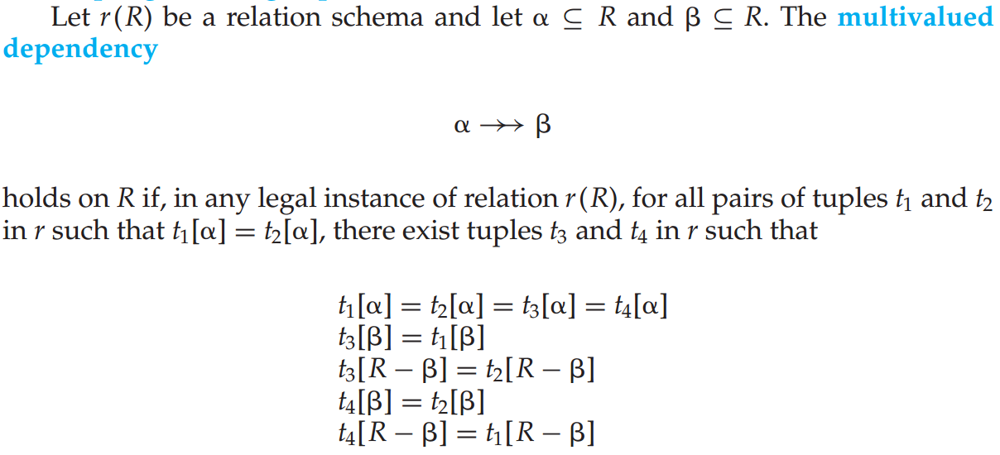
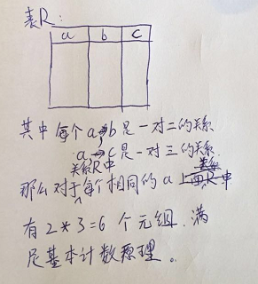
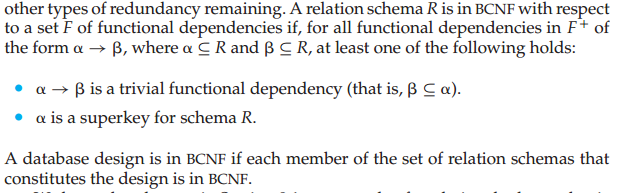
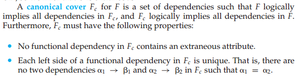
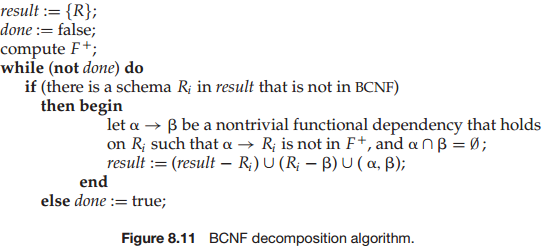
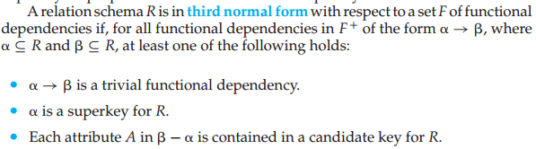
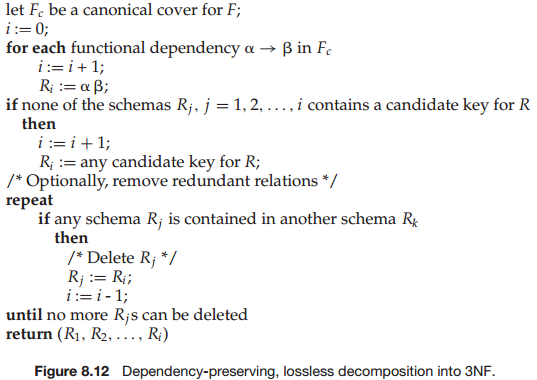

<!DOCTYPE html>


  


<html class="theme-next mist use-motion" lang="zh-Hans">
<head>
  <meta charset="UTF-8"/>
<meta http-equiv="X-UA-Compatible" content="IE=edge" />
<meta name="viewport" content="width=device-width, initial-scale=1, maximum-scale=1"/>
<meta name="theme-color" content="#222">


<meta http-equiv="Cache-Control" content="no-transform" />
<meta http-equiv="Cache-Control" content="no-siteapp" />


  
  
  <link href="/lib/fancybox/source/jquery.fancybox.css?v=2.1.5" rel="stylesheet" type="text/css" />


  
  
  
  

  
    
    
  

  

  

  

  

  
    
    
    <link href="//fonts.googleapis.com/css?family=Lato:300,300italic,400,400italic,700,700italic&subset=latin,latin-ext" rel="stylesheet" type="text/css">
  


<link href="/lib/font-awesome/css/font-awesome.min.css?v=4.6.2" rel="stylesheet" type="text/css" />

<link href="/css/main.css?v=5.1.2" rel="stylesheet" type="text/css" />


  <meta name="keywords" content="范式," />


  <link rel="shortcut icon" type="image/x-icon" href="/favicon.ico?v=5.1.2" />


<meta name="description" content="关系数据库设计的目标是生成一组关系模式使我们存储信息时避免不必要的冗余，并且让我们可以方便地获取信息。这是通过设计满足适当范式（normal form）的模式来实现的。">
<meta name="keywords" content="范式">
<meta property="og:type" content="article">
<meta property="og:title" content="关系型数据库之范式">
<meta property="og:url" content="https://karellincoln.github.io/2018/04/04/normal-form/index.html">
<meta property="og:site_name" content="一只小小鸟">
<meta property="og:description" content="关系数据库设计的目标是生成一组关系模式使我们存储信息时避免不必要的冗余，并且让我们可以方便地获取信息。这是通过设计满足适当范式（normal form）的模式来实现的。">
<meta property="og:locale" content="zh-Hans">
<meta property="og:image" content="https://karellincoln.github.io/2018/04/04/normal-form/multivalued-dependency.jpg">
<meta property="og:image" content="https://karellincoln.github.io/2018/04/04/normal-form/multivalued-dependency-analy.jpg">
<meta property="og:image" content="https://karellincoln.github.io/2018/04/04/normal-form/BCNF.png">
<meta property="og:image" content="https://karellincoln.github.io/2018/04/04/normal-form/canonical-cover.jpg">
<meta property="og:image" content="https://karellincoln.github.io/2018/04/04/normal-form/BCNF-algorithm.jpg">
<meta property="og:image" content="https://karellincoln.github.io/2018/04/04/normal-form/3NF.jpg">
<meta property="og:image" content="https://karellincoln.github.io/2018/04/04/normal-form/3NF-algorithm.jpg">
<meta property="og:updated_time" content="2018-04-05T07:28:03.048Z">
<meta name="twitter:card" content="summary">
<meta name="twitter:title" content="关系型数据库之范式">
<meta name="twitter:description" content="关系数据库设计的目标是生成一组关系模式使我们存储信息时避免不必要的冗余，并且让我们可以方便地获取信息。这是通过设计满足适当范式（normal form）的模式来实现的。">
<meta name="twitter:image" content="https://karellincoln.github.io/2018/04/04/normal-form/multivalued-dependency.jpg">


<script type="text/javascript" id="hexo.configurations">
  var NexT = window.NexT || {};
  var CONFIG = {
    root: '/',
    scheme: 'Mist',
    sidebar: {"position":"left","display":"post","offset":12,"offset_float":12,"b2t":false,"scrollpercent":true,"onmobile":false},
    fancybox: true,
    tabs: true,
    motion: true,
    duoshuo: {
      userId: '0',
      author: '博主'
    },
    algolia: {
      applicationID: '',
      apiKey: '',
      indexName: '',
      hits: {"per_page":10},
      labels: {"input_placeholder":"Search for Posts","hits_empty":"We didn't find any results for the search: ${query}","hits_stats":"${hits} results found in ${time} ms"}
    }
  };
</script>


  <link rel="canonical" href="https://karellincoln.github.io/2018/04/04/normal-form/"/>


  <title>关系型数据库之范式 | 一只小小鸟</title>
  


</head>

<body itemscope itemtype="http://schema.org/WebPage" lang="zh-Hans">

  
  
    
  

  <div class="container sidebar-position-left page-post-detail ">
    <div class="headband"></div>

    <header id="header" class="header" itemscope itemtype="http://schema.org/WPHeader">
      <div class="header-inner"><div class="site-brand-wrapper">
  <div class="site-meta ">
    

    <div class="custom-logo-site-title">
      <a href="/"  class="brand" rel="start">
        <span class="logo-line-before"><i></i></span>
        <span class="site-title">一只小小鸟</span>
        <span class="logo-line-after"><i></i></span>
      </a>
    </div>
      
        <p class="site-subtitle"></p>
      
  </div>

  <div class="site-nav-toggle">
    <button>
      <span class="btn-bar"></span>
      <span class="btn-bar"></span>
      <span class="btn-bar"></span>
    </button>
  </div>
</div>

<nav class="site-nav">
  

  
    <ul id="menu" class="menu">
      
        
        <li class="menu-item menu-item-home">
          <a href="/" rel="section">
            
              <i class="menu-item-icon fa fa-fw fa-home"></i> <br />
            
            首页
          </a>
        </li>
      
        
        <li class="menu-item menu-item-categories">
          <a href="/categories/" rel="section">
            
              <i class="menu-item-icon fa fa-fw fa-th"></i> <br />
            
            分类
          </a>
        </li>
      
        
        <li class="menu-item menu-item-about">
          <a href="/about/" rel="section">
            
              <i class="menu-item-icon fa fa-fw fa-user"></i> <br />
            
            关于
          </a>
        </li>
      
        
        <li class="menu-item menu-item-archives">
          <a href="/archives/" rel="section">
            
              <i class="menu-item-icon fa fa-fw fa-archive"></i> <br />
            
            归档
          </a>
        </li>
      
        
        <li class="menu-item menu-item-tags">
          <a href="/tags/" rel="section">
            
              <i class="menu-item-icon fa fa-fw fa-tags"></i> <br />
            
            标签
          </a>
        </li>
      

      
    </ul>
  

  
</nav>


 </div>
    </header>

    <main id="main" class="main">
      <div class="main-inner">
        <div class="content-wrap">
          <div id="content" class="content">
            

  <div id="posts" class="posts-expand">
    

  

  
  
  

  <article class="post post-type-normal" itemscope itemtype="http://schema.org/Article">
  
  
  
  <div class="post-block">
    <link itemprop="mainEntityOfPage" href="https://karellincoln.github.io/2018/04/04/normal-form/">

    <span hidden itemprop="author" itemscope itemtype="http://schema.org/Person">
      <meta itemprop="name" content="karellincoln">
      <meta itemprop="description" content="">
      <meta itemprop="image" content="/images/avatar.jpg">
    </span>

    <span hidden itemprop="publisher" itemscope itemtype="http://schema.org/Organization">
      <meta itemprop="name" content="一只小小鸟">
    </span>

    
      <header class="post-header">

        
        
          <h1 class="post-title" itemprop="name headline">关系型数据库之范式</h1>
        

        <div class="post-meta">
          <span class="post-time">
            
              <span class="post-meta-item-icon">
                <i class="fa fa-calendar-o"></i>
              </span>
              
                <span class="post-meta-item-text">发表于</span>
              
              <time title="创建于" itemprop="dateCreated datePublished" datetime="2018-04-04T22:37:10+08:00">
                2018-04-04
              </time>
            

            

            
          </span>

          
            <span class="post-category" >
            
              <span class="post-meta-divider">|</span>
            
              <span class="post-meta-item-icon">
                <i class="fa fa-folder-o"></i>
              </span>
              
                <span class="post-meta-item-text">分类于</span>
              
              
                <span itemprop="about" itemscope itemtype="http://schema.org/Thing">
                  <a href="/categories/分布式/" itemprop="url" rel="index">
                    <span itemprop="name">分布式</span>
                  </a>
                </span>

                
                
                  ， 
                
              
                <span itemprop="about" itemscope itemtype="http://schema.org/Thing">
                  <a href="/categories/分布式/关系型数据库/" itemprop="url" rel="index">
                    <span itemprop="name">关系型数据库</span>
                  </a>
                </span>

                
                
              
            </span>
          

          
            
              <span class="post-comments-count">
                <span class="post-meta-divider">|</span>
                <span class="post-meta-item-icon">
                  <i class="fa fa-comment-o"></i>
                </span>
                <a href="/2018/04/04/normal-form/#comments" itemprop="discussionUrl">
                  <span class="post-comments-count disqus-comment-count"
                        data-disqus-identifier="2018/04/04/normal-form/" itemprop="commentCount"></span>
                </a>
              </span>
            
          

          
          

          

          

          

        </div>
      </header>
    

    
    
    
    <div class="post-body" itemprop="articleBody">

      
      

      
        <div class="note info"><p>关系数据库设计的目标是生成一组关系模式<br>使我们存储信息时避免不必要的冗余，并且让我们可以方便地获取信息。<br>这是通过设计满足适当范式（normal form）的模式来实现的。</p></div>

<a id="more"></a>
<h2 id="好的关系设计的特点"><a href="#好的关系设计的特点" class="headerlink" title="好的关系设计的特点"></a>好的关系设计的特点</h2><p>一开始的表一般都是比较大的，因为人是懒惰的喜欢不加思索的将很多属性放到一起，而形成一张大表。</p>
<div class="note default"><p>举例：表A(a,a1,b)和表B(b, b1)是一对多的关系，分别有主码a和b。<br>如果现在将AB连接成一张大表A-B(a,a1,b,b1)。那么A-B将有大量的冗余的b1属性值。</p></div>

<p>而这样的设计会带来什么呢？</p>
<ol>
<li>冗余的b1信息，增加了存储，而且当要修改一个b所对应的b1值的时候会需要修改多行。这样的就要保证更复杂的事务原子性。</li>
<li>使用A-B表，当要添加一个新的(b, b1)对时，由于没有A与之对应，这时就要处理空值问题了。</li>
</ol>
<h3 id="那什么样的表需要分解呢？"><a href="#那什么样的表需要分解呢？" class="headerlink" title="那什么样的表需要分解呢？"></a>那什么样的表需要分解呢？</h3><ul>
<li>函数依赖(functional dependency)：如果存在模式（b，b1），其中b可以作为主码。则存在<code>b--&gt;b1</code>的函数依赖关系</li>
<li>多值依赖(multivalued dependency): 比较难直接讲清楚。<br>  <br>  直观的说是a和b之间的关系独立于a和R-b之间的关系<br>  <br>  可以认识到函数依赖是多值依赖的一种特殊情况，如果其中的一个关系是一对一的(即每一个a只有一个b或c与之对应)。<br>  根据多值依赖的分解满足无损分解。</li>
</ul>
<p>任何一个函数依赖都是一个多值依赖。<br>一个表关系中存在不合理的函数依赖和多值依赖就是需要分解的。</p>
<h3 id="如何判断分解的好坏呢？"><a href="#如何判断分解的好坏呢？" class="headerlink" title="如何判断分解的好坏呢？"></a>如何判断分解的好坏呢？</h3><ul>
<li>有损分解(lossy decomposition)和无损分解(lossless decomposition)：有损分解是指将一个大表分解之后再使用自然连接所形成的表增加了一些元组，使得原来的一些对应关系丢失了。反之称为无损分解。</li>
<li>保持依赖(dependency preservation): 一个函数依赖同时也可以理解成为一个关系约束，如果关系模式中能够高效地检查这些约束是很有用的，称这个关系模式是保持依赖的。</li>
</ul>
<p>有损分解是表的分解<span class="label primary">必须</span>要保证的，但是保持依赖可以看情况，有时候可以通过<span class="label primary">物化视图</span>高效的检查（但是也不是很高效）</p>
<h2 id="范式"><a href="#范式" class="headerlink" title="范式"></a>范式</h2><p>有了上面的知识之后，理解范式就变成能简单了。</p>
<h3 id="第一范式-1NF"><a href="#第一范式-1NF" class="headerlink" title="第一范式 1NF"></a>第一范式 1NF</h3><h4 id="定义："><a href="#定义：" class="headerlink" title="定义："></a>定义：</h4><p>一个域是原子的(atomic)， 如果该域的元素被认为是不可分割的单元。我们称一个关系模型R属于第一范式，如果R的所有属性的域都是原子的。</p>
<h4 id="理解："><a href="#理解：" class="headerlink" title="理解："></a>理解：</h4><p>原子的，是关系模型设计者的思想，在实现方面认为可以由<span class="label primary">固定的空间</span>表示而不是固定空间的集合或组合。<br>非原子的域主要和组合属性（嵌套关系）和多值属性（包含值得集合）：这些在表达上可能会更清晰一些但是都是不好的关系模型（产生冗余和修改的困难），SQL语句也不支持这种语法。</p>
<h3 id="Boyce-Codd-范式"><a href="#Boyce-Codd-范式" class="headerlink" title="Boyce-Codd 范式"></a>Boyce-Codd 范式</h3><h4 id="定义：-1"><a href="#定义：-1" class="headerlink" title="定义："></a>定义：</h4><p></p>
<h4 id="理解：-1"><a href="#理解：-1" class="headerlink" title="理解："></a>理解：</h4><p>根据我们分解关系表的最直接的要求，可以得到如果一个非平凡函数依赖中的a不是模式R的超码时，会产生多余的冗余信息。</p>
<p>但是这样的实现并不能一定保持依赖。同时也不能将多值依赖给分解了。保持依赖需要<span class="label primary">加入分解约束</span>得到3NF，而多值依赖需要<span class="label primary">强化分解条件</span>得到4NF。</p>
<h4 id="实现："><a href="#实现：" class="headerlink" title="实现："></a>实现：</h4><p>为了得到依赖闭包和实现3NF，引入函数依赖理论，属性集的闭包和正则覆盖(canonical cover)。<br>其中正则覆盖值得是与原函数依赖F拥有相同闭包的最小函数依赖集。<br>具体定义：<br></p>
<p>BCNF的实现：<br></p>
<h3 id="其他范式"><a href="#其他范式" class="headerlink" title="其他范式"></a>其他范式</h3><h4 id="定义：-2"><a href="#定义：-2" class="headerlink" title="定义："></a>定义：</h4><p>3NF：<br></p>
<p>4NF:<br>A relation schema r(R) is in fourth normal form (4NF) with respect to a set D of functional and multivalued dependencies if, for all multivalued dependencies in D+ of the form  →→ , where  ⊆ R and  ⊆ R, at least one of the following holds:</p>
<ul>
<li> →→  is a trivial multivalued dependency.</li>
<li> is a superkey for R.</li>
</ul>
<h4 id="实现：-1"><a href="#实现：-1" class="headerlink" title="实现："></a>实现：</h4><p>3NF：<br></p>
<p>4NF：实现基本同BCNF。</p>
<hr>

<p>后面的每个范式没有具体讲了，因为觉得在好的关系设计中将主要的设计问题需要考虑的已经说清楚了。<br>具体的参见课本。</p>
<div class="note primary"><p>参考文章：<br>《数据库系统概念（第六版）》<br><a href="https://cnbin.github.io/blog/2015/12/12/sql-di--fan-shi-,-di-er-fan-shi-,-di-san-fan-shi-bcnf/" target="_blank" rel="noopener">SQL 第一范式、第二范式、第三范式、BCNF</a><br></p></div>

      
    </div>
    
    
    

    

    
      <div>
        <div style="padding: 10px 0; margin: 20px auto; width: 90%; text-align: center;">
  <div></div>
  <button id="rewardButton" disable="enable" onclick="var qr = document.getElementById('QR'); if (qr.style.display === 'none') {qr.style.display='block';} else {qr.style.display='none'}">
    <span>Donate</span>
  </button>
  <div id="QR" style="display: none;">

    
      <div id="wechat" style="display: inline-block">
        
        <p>WeChat Pay</p>
      </div>
    

    
      <div id="alipay" style="display: inline-block">
        
        <p>Alipay</p>
      </div>
    

    

  </div>
</div>

      </div>
    

    

    <footer class="post-footer">
      
        <div class="post-tags">
          
            <a href="/tags/范式/" rel="tag"># 范式</a>
          
        </div>
      

      
      
      

      
        <div class="post-nav">
          <div class="post-nav-next post-nav-item">
            
              <a href="/2018/04/04/hexo-new-customization/" rel="next" title="hexo基于NexT主题订制自己的主题">
                <i class="fa fa-chevron-left"></i> hexo基于NexT主题订制自己的主题
              </a>
            
          </div>

          <span class="post-nav-divider"></span>

          <div class="post-nav-prev post-nav-item">
            
          </div>
        </div>
      

      
      
    </footer>
  </div>
  
  
  
  </article>


    <div class="post-spread">
      
    </div>
  </div>


          </div>
          


          
  <div class="comments" id="comments">
    
      <div id="disqus_thread">
        <noscript>
          Please enable JavaScript to view the
          <a href="https://disqus.com/?ref_noscript">comments powered by Disqus.</a>
        </noscript>
      </div>
    
  </div>


        </div>
        
          
  
  <div class="sidebar-toggle">
    <div class="sidebar-toggle-line-wrap">
      <span class="sidebar-toggle-line sidebar-toggle-line-first"></span>
      <span class="sidebar-toggle-line sidebar-toggle-line-middle"></span>
      <span class="sidebar-toggle-line sidebar-toggle-line-last"></span>
    </div>
  </div>

  <aside id="sidebar" class="sidebar">
    
    <div class="sidebar-inner">

      

      
        <ul class="sidebar-nav motion-element">
          <li class="sidebar-nav-toc sidebar-nav-active" data-target="post-toc-wrap" >
            文章目录
          </li>
          <li class="sidebar-nav-overview" data-target="site-overview">
            站点概览
          </li>
        </ul>
      

      <section class="site-overview sidebar-panel">
        <div class="site-author motion-element" itemprop="author" itemscope itemtype="http://schema.org/Person">
          
          <p class="site-author-name" itemprop="name">karellincoln</p>
           
              <p class="site-description motion-element" itemprop="description"></p>
          
        </div>
        <nav class="site-state motion-element">

          
            <div class="site-state-item site-state-posts">
              <a href="/archives/">
                <span class="site-state-item-count">7</span>
                <span class="site-state-item-name">日志</span>
              </a>
            </div>
          

          
            
            
            <div class="site-state-item site-state-categories">
              <a href="/categories/index.html">
                <span class="site-state-item-count">4</span>
                <span class="site-state-item-name">分类</span>
              </a>
            </div>
          

          
            
            
            <div class="site-state-item site-state-tags">
              <a href="/tags/index.html">
                <span class="site-state-item-count">4</span>
                <span class="site-state-item-name">标签</span>
              </a>
            </div>
          

        </nav>

        

        <div class="links-of-author motion-element">
          
            
              <span class="links-of-author-item">
                <a href="https://github.com/karellincoln" target="_blank" title="GitHub">
                  
                    <i class="fa fa-fw fa-https://github.com/karellincoln"></i>
                  
                    
                      GitHub
                    
                </a>
              </span>
            
          
        </div>

        
        

        
        

        


      </section>

      
      <!--noindex-->
        <section class="post-toc-wrap motion-element sidebar-panel sidebar-panel-active">
          <div class="post-toc">

            
              
            

            
              <div class="post-toc-content"><ol class="nav"><li class="nav-item nav-level-2"><a class="nav-link" href="#好的关系设计的特点"><span class="nav-number">1.</span> <span class="nav-text">好的关系设计的特点</span></a><ol class="nav-child"><li class="nav-item nav-level-3"><a class="nav-link" href="#那什么样的表需要分解呢？"><span class="nav-number">1.1.</span> <span class="nav-text">那什么样的表需要分解呢？</span></a></li><li class="nav-item nav-level-3"><a class="nav-link" href="#如何判断分解的好坏呢？"><span class="nav-number">1.2.</span> <span class="nav-text">如何判断分解的好坏呢？</span></a></li></ol></li><li class="nav-item nav-level-2"><a class="nav-link" href="#范式"><span class="nav-number">2.</span> <span class="nav-text">范式</span></a><ol class="nav-child"><li class="nav-item nav-level-3"><a class="nav-link" href="#第一范式-1NF"><span class="nav-number">2.1.</span> <span class="nav-text">第一范式 1NF</span></a><ol class="nav-child"><li class="nav-item nav-level-4"><a class="nav-link" href="#定义："><span class="nav-number">2.1.1.</span> <span class="nav-text">定义：</span></a></li><li class="nav-item nav-level-4"><a class="nav-link" href="#理解："><span class="nav-number">2.1.2.</span> <span class="nav-text">理解：</span></a></li></ol></li><li class="nav-item nav-level-3"><a class="nav-link" href="#Boyce-Codd-范式"><span class="nav-number">2.2.</span> <span class="nav-text">Boyce-Codd 范式</span></a><ol class="nav-child"><li class="nav-item nav-level-4"><a class="nav-link" href="#定义：-1"><span class="nav-number">2.2.1.</span> <span class="nav-text">定义：</span></a></li><li class="nav-item nav-level-4"><a class="nav-link" href="#理解：-1"><span class="nav-number">2.2.2.</span> <span class="nav-text">理解：</span></a></li><li class="nav-item nav-level-4"><a class="nav-link" href="#实现："><span class="nav-number">2.2.3.</span> <span class="nav-text">实现：</span></a></li></ol></li><li class="nav-item nav-level-3"><a class="nav-link" href="#其他范式"><span class="nav-number">2.3.</span> <span class="nav-text">其他范式</span></a><ol class="nav-child"><li class="nav-item nav-level-4"><a class="nav-link" href="#定义：-2"><span class="nav-number">2.3.1.</span> <span class="nav-text">定义：</span></a></li><li class="nav-item nav-level-4"><a class="nav-link" href="#实现：-1"><span class="nav-number">2.3.2.</span> <span class="nav-text">实现：</span></a></li></ol></li></ol></li></ol></div>
            

          </div>
        </section>
      <!--/noindex-->
      

      

    </div>
  </aside>


        
      </div>
    </main>

    <footer id="footer" class="footer">
      <div class="footer-inner">
        <div class="copyright" >
  
  &copy; 
  <span itemprop="copyrightYear">2018</span>
  <span class="with-love">
    <i class="fa fa-heart"></i>
  </span>
  <span class="author" itemprop="copyrightHolder">karellincoln</span>
</div>


<div class="powered-by">
  由 <a class="theme-link" href="https://hexo.io">Hexo</a> 强力驱动
</div>

<div class="theme-info">
  主题 -
  <a class="theme-link" href="https://github.com/iissnan/hexo-theme-next">
    NexT.Mist
  </a>
</div>


        

        
      </div>
    </footer>

    
      <div class="back-to-top">
        <i class="fa fa-arrow-up"></i>
        
          <span id="scrollpercent"><span>0</span>%</span>
        
      </div>
    

  </div>

  

<script type="text/javascript">
  if (Object.prototype.toString.call(window.Promise) !== '[object Function]') {
    window.Promise = null;
  }
</script>


  


  
  <script type="text/javascript" src="/lib/jquery/index.js?v=2.1.3"></script>

  
  <script type="text/javascript" src="/lib/fastclick/lib/fastclick.min.js?v=1.0.6"></script>

  
  <script type="text/javascript" src="/lib/jquery_lazyload/jquery.lazyload.js?v=1.9.7"></script>

  
  <script type="text/javascript" src="/lib/velocity/velocity.min.js?v=1.2.1"></script>

  
  <script type="text/javascript" src="/lib/velocity/velocity.ui.min.js?v=1.2.1"></script>

  
  <script type="text/javascript" src="/lib/fancybox/source/jquery.fancybox.pack.js?v=2.1.5"></script>


  


  <script type="text/javascript" src="/js/src/utils.js?v=5.1.2"></script>

  <script type="text/javascript" src="/js/src/motion.js?v=5.1.2"></script>


  
  

  
  <script type="text/javascript" src="/js/src/scrollspy.js?v=5.1.2"></script>
<script type="text/javascript" src="/js/src/post-details.js?v=5.1.2"></script>


  


  <script type="text/javascript" src="/js/src/bootstrap.js?v=5.1.2"></script>


  


  

    
      <script id="dsq-count-scr" src="https://karellincoln.disqus.com/count.js" async></script>
    

    
      <script type="text/javascript">
        var disqus_config = function () {
          this.page.url = 'https://karellincoln.github.io/2018/04/04/normal-form/';
          this.page.identifier = '2018/04/04/normal-form/';
          this.page.title = '关系型数据库之范式';
        };
        var d = document, s = d.createElement('script');
        s.src = 'https://karellincoln.disqus.com/embed.js';
        s.setAttribute('data-timestamp', '' + +new Date());
        (d.head || d.body).appendChild(s);
      </script>
    

  


  


  

  

  

  

  

  

</body>
</html>
